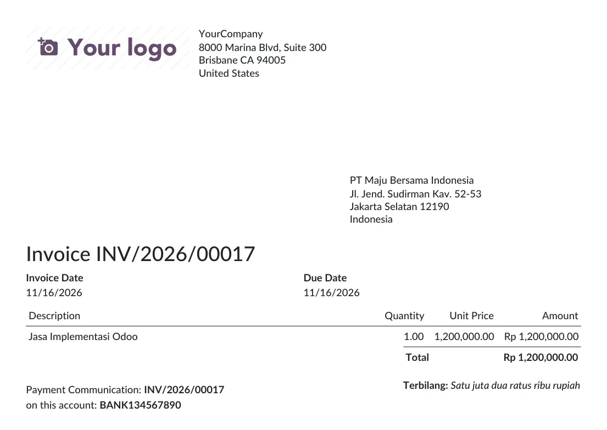
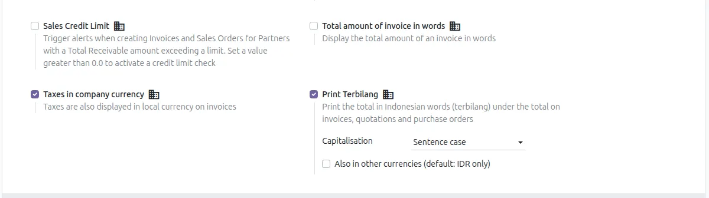
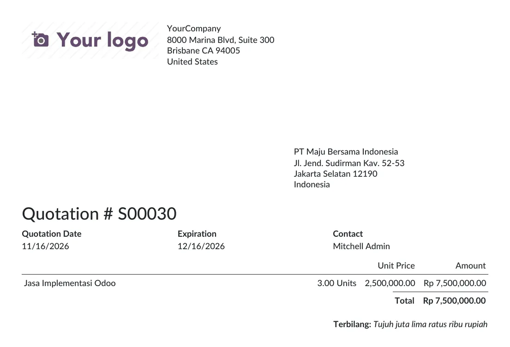
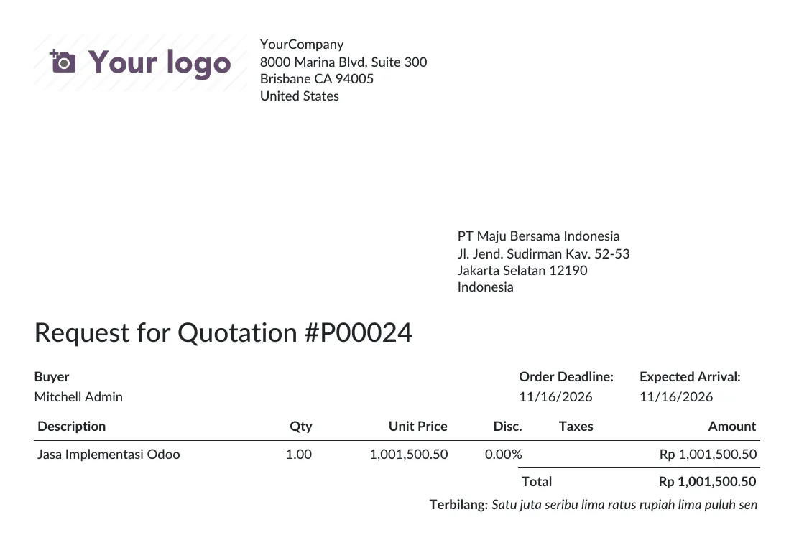

Terbilang IDR - Amount in Words in Indonesian on Invoice
Terbilang: the invoice amount in words in Indonesian under the total, "Satu juta dua ratus ribu rupiah", with correct rupiah and sen rules.
- Price
- $4.99
- Odoo versions
- 16.0
- 17.0
- 18.0
- 19.0
- 20.0
- Technical name
tamadoo_terbilang_idr- License
- OPL-1

Text and screenshots below are from the Odoo 20.0 version of this module.
Print the invoice total in Indonesian words under the total: "Terbilang: Satu juta dua ratus ribu rupiah". Correct Indonesian rules, rupiah and sen, on/off per company.

What you get
Correct Indonesian rules
se- only where Indonesian uses it: sepuluh, sebelas, seratus, seribu, but satu juta, satu miliar, satu triliun.
Rupiah and sen
Money is written as "... rupiah ... sen", rounded half-up to the currency decimals.
Big and small numbers
nol up to kuadriliun, negatives as "minus", plain decimals read digit by digit after "koma".
Only when it fits
Printed on documents in IDR; switch on "Also in other currencies" for USD, SGD, EUR...
Your capitalisation
Sentence case, Title Case, UPPER CASE or lower case.
Field for your reports
amount_text_idr on invoices (and sales / purchase orders with the add-ons) for custom layouts.
How it writes
11 | sebelas |
100 | seratus |
1.000 | seribu |
1.001 | seribu satu |
1.000.000 | satu juta |
1.200.000 | satu juta dua ratus ribu |
1.000.000.000.000 | satu triliun |
0 | nol |
-25.000 | minus dua puluh lima ribu |
Rp 1.500,50 | seribu lima ratus rupiah lima puluh sen |
Rp 0,05 | lima sen |
2,05 (number) | dua koma nol lima |
Step by step
Customer invoice in IDR
Post an invoice in IDR and print it: the total in words appears right under the total.

Settings
Invoicing / Accounting > Configuration > Settings > Customer Invoices: Print Terbilang (on/off), capitalisation, and whether other currencies print it too. Per company.

Quotations and sales orders
With Sales installed, the free add-on Terbilang IDR - Sales Order is installed automatically and prints the words on quotations and sales orders.

Requests for quotation and purchase orders
With Purchase installed, Terbilang IDR - Purchase Order does the same on purchase documents, here with sen.

Setup
- Install Terbilang IDR. If Sales or Purchase is installed, the matching add-on comes with it.
- Open Invoicing / Accounting > Configuration > Settings, section Customer Invoices: Print Terbilang is on by default. Pick the capitalisation, and tick Also in other currencies if you want it on non-IDR documents too.
- Print an invoice in IDR: "Terbilang: ..." appears under the total.
Requirements
Odoo 20.0 (Community or Enterprise) with Invoicing / Accounting (account).
Tamadoo · tama.odoo@gmail.com
Get Terbilang IDR
Questions before buying? Write to tama.odoo@gmail.com.